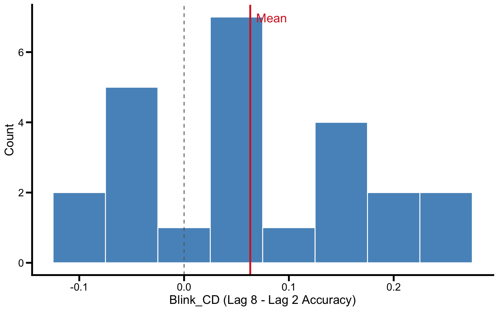
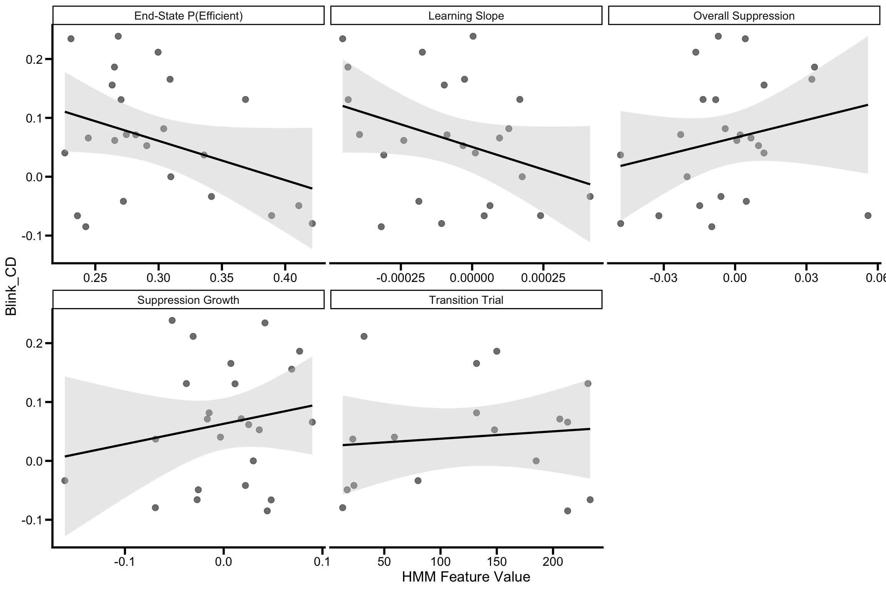
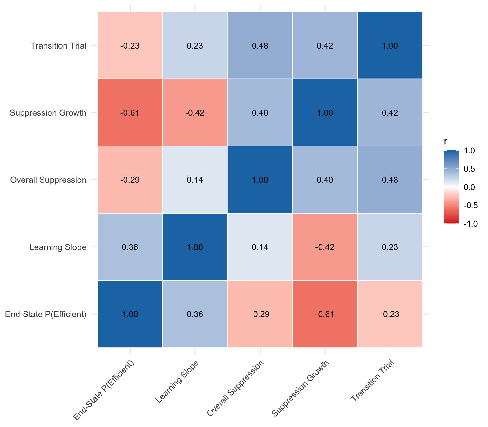
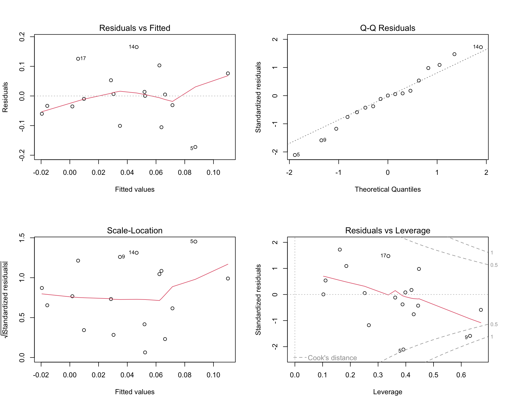
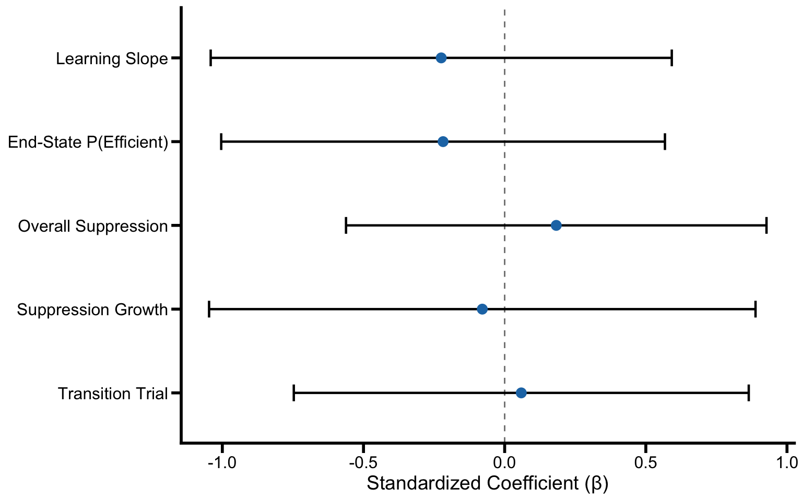
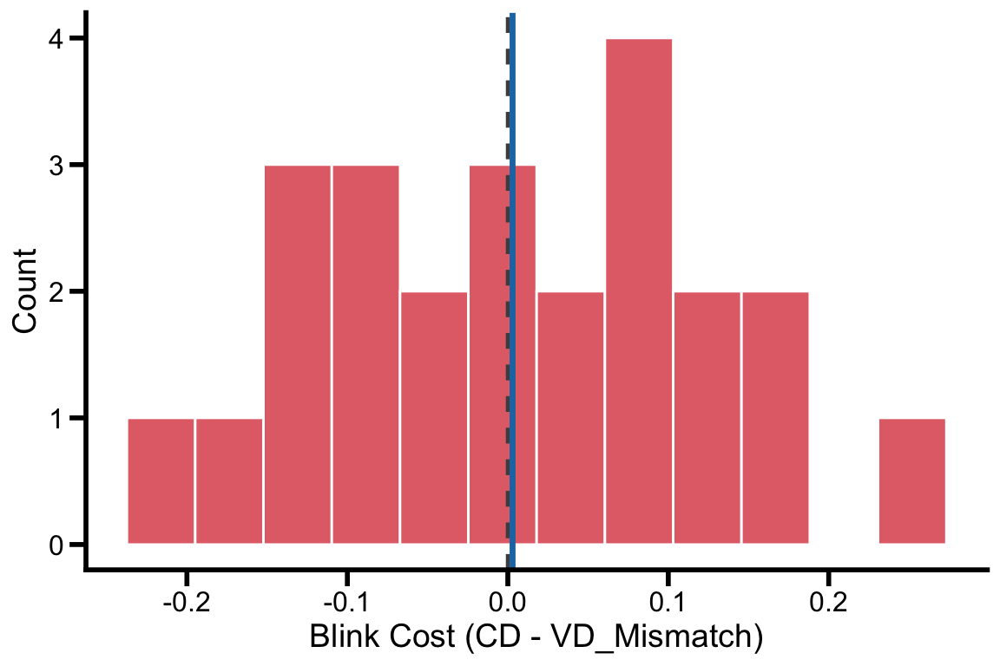
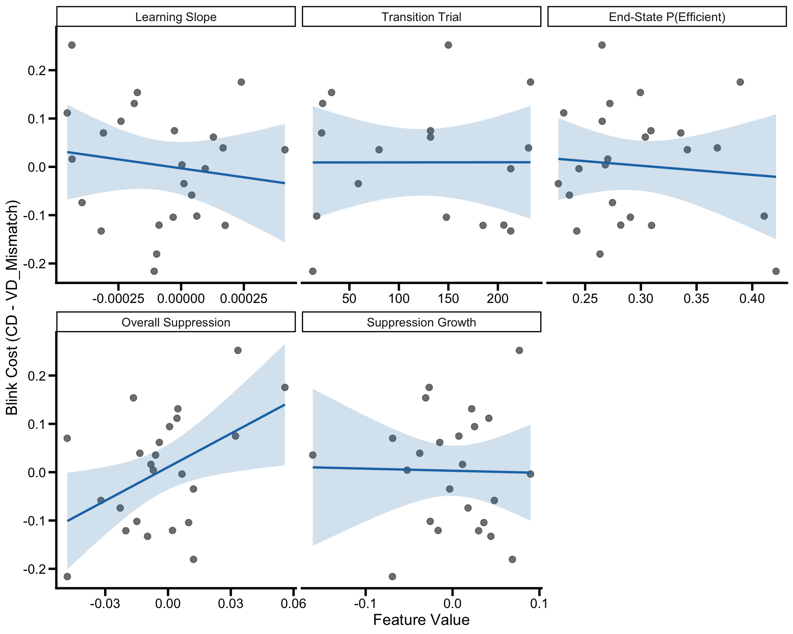
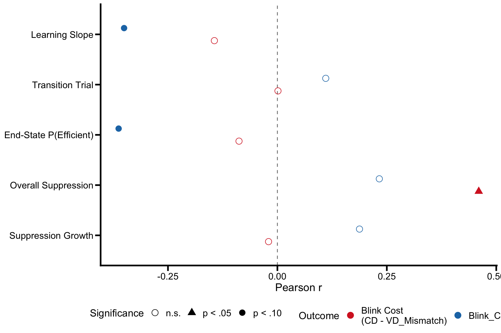

Portfolios 10 and 11 established that a 2-state joint HMM (item type + fixation duration) recovers two attentional modes - Efficient Search and Distractor Engagement - and that the VD-CD difference in state prevalence captures the learned distractor suppression signal. Portfolio 11 extracted five participant-level features from the VST-first group (n = 24) that quantify how quickly and how completely each individual learned to suppress the consistent distractor:
The central question for Stage 3 is whether these HMM-derived individual differences in VST suppression learning predict cross-task transfer to the RSVP task. The VST-first group completed the Visual Search Task before the RSVP task, so any relationship between VST learning features and RSVP outcomes would constitute evidence that the latent suppression process captured by the HMM generalizes beyond the training task.
The primary RSVP transfer outcome is Blink_CD - the attentional blink magnitude for the consistent distractor color, computed as the difference in target accuracy between lag 8 and lag 2, where lag is the distance in stream positions between a distractor (a hashtag) and the single target that follows it. If learned suppression transfers, participants who showed stronger or faster suppression learning in the VST should show a reduced attentional blink for the consistent distractor color in the RSVP task.
This approach follows the logic of individual-differences transfer designs used in the learned attention literature, where the strength of statistical learning during training predicts the magnitude of transfer effects in a novel task.
rm(list = ls())
library(tidyverse)## ── Attaching core tidyverse packages ──────────────────────── tidyverse 2.0.0 ──
## ✔ dplyr 1.1.4 ✔ readr 2.1.5
## ✔ forcats 1.0.1 ✔ stringr 1.5.2
## ✔ ggplot2 4.0.0 ✔ tibble 3.3.0
## ✔ lubridate 1.9.4 ✔ tidyr 1.3.1
## ✔ purrr 1.1.0
## ── Conflicts ────────────────────────────────────────── tidyverse_conflicts() ──
## ✖ dplyr::filter() masks stats::filter()
## ✖ dplyr::lag() masks stats::lag()
## ℹ Use the conflicted package (<http://conflicted.r-lib.org/>) to force all conflicts to become errorslibrary(readxl)
library(knitr)
library(patchwork)
library(car)## Loading required package: carData
##
## Attaching package: 'car'
##
## The following object is masked from 'package:dplyr':
##
## recode
##
## The following object is masked from 'package:purrr':
##
## someselect <- dplyr::select
filter <- dplyr::filter# Plot theme (matching manuscript style from p10/p11)
axis_text_size <- 14
axis_tick_text_size <- 12
graph_color <- "black"
axis_tick_length <- 0.25
axis_tick_units <- "cm"
axis_thickness <- 1
manuscript_theme <- theme_classic() +
theme(
axis.line = element_line(linewidth = axis_thickness, colour = graph_color),
axis.title = element_text(size = axis_text_size),
axis.text = element_text(colour = graph_color, size = axis_tick_text_size),
axis.ticks = element_line(linewidth = axis_thickness, colour = graph_color),
axis.ticks.length.y = unit(axis_tick_length, axis_tick_units),
axis.ticks.length.x = unit(axis_tick_length, axis_tick_units),
legend.position = "top",
legend.text = element_text(size = 12),
legend.title = element_text(size = 13),
text = element_text(size = axis_tick_text_size)
)
# Consistent color palette
col_efficient <- "#1F77B4"
col_engaged <- "#D62728"# Participant-level HMM features extracted in p11 (VST-first group, n = 24)
hmm_features <- read_csv("output/stage2_participant_features_vst_first.csv",
show_col_types = FALSE)# RSVP accuracy data
rsvp_acc <- read_excel(
"summary/RSVP_DataSummary_SL_EyeTracking_Final.xlsx",
sheet = "ACC"
)
# Filter to VST-first group (Order == "VST_RSVP")
rsvp_vst <- rsvp_acc %>%
filter(Order == "VST_RSVP") %>%
mutate(subjnum = as.integer(subjnum))Each RSVP stream contains a distractor (a hashtag) followed by a single target; lag indexes the number of stream positions between them. The dataset contains target accuracy for each condition (CD, ND, VD_Match, VD_Mismatch) at two lags (2 and 8), along with pre-computed attentional blink scores (Blink = target accuracy at lag 8 − target accuracy at lag 2). The primary outcome is Blink_CD: the attentional blink magnitude for the consistent distractor color.
# Merge by subject number. We use inner_join (not left_join) on purpose: any participant who has features but no RSVP record (or vice versa) is dropped from analysis, which keeps `transfer_data` to the participants who can contribute to every model below. The setdiff checks below report whether anyone was lost so a silent drop never goes unnoticed.
transfer_data <- hmm_features %>%
inner_join(rsvp_vst, by = "subjnum")
# Diagnostic: who, if anyone, was lost in the merge
hmm_only <- setdiff(hmm_features$subjnum, rsvp_vst$subjnum)
rsvp_only <- setdiff(rsvp_vst$subjnum, hmm_features$subjnum)
if (length(hmm_only) > 0) cat(" Participants in HMM but not RSVP:", hmm_only, "\n")
if (length(rsvp_only) > 0) cat(" Participants in RSVP but not HMM:", rsvp_only, "\n")
if (length(hmm_only) == 0 & length(rsvp_only) == 0) cat(" All participants matched.\n")## All participants matched.# Compute M/SD/Min/Max for each of the four blink measures, producing one wide row with columns like `Blink_CD_M`, `Blink_CD_SD`, ...
# The two pivots then reshape this into a tidy measure x {M,SD,Min,Max} table:
## pivot_longer's `names_pattern = "(.+)_(M|SD|Min|Max)"` splits each column name into a measure stem and a statistic suffix
## pivot_wider then puts each statistic in its own column
blink_summary <- transfer_data %>%
summarise(
across(c(Blink_CD, Blink_ND, Blink_VD_Match, Blink_VD_Mismatch),
list(M = ~mean(., na.rm = TRUE),
SD = ~sd(., na.rm = TRUE),
Min = ~min(., na.rm = TRUE),
Max = ~max(., na.rm = TRUE)),
.names = "{.col}_{.fn}")
) %>%
pivot_longer(everything(),
names_to = c("measure", "stat"),
names_pattern = "(.+)_(M|SD|Min|Max)") %>%
pivot_wider(names_from = stat, values_from = value)## Warning: Values from `value` are not uniquely identified; output will contain list-cols.
## • Use `values_fn = list` to suppress this warning.
## • Use `values_fn = {summary_fun}` to summarise duplicates.
## • Use the following dplyr code to identify duplicates.
## {data} |>
## dplyr::summarise(n = dplyr::n(), .by = c(measure, stat)) |>
## dplyr::filter(n > 1L)kable(blink_summary, digits = 3,
caption = "Table 1. Descriptive statistics for RSVP attentional blink scores (VST-first group).")| measure | M | SD |
|---|---|---|
| Blink_CD | 0.06312693, -0.08494208, 0.23865546 | 0.1021727 |
| Blink_ND | 0.05790576, -0.04712405, 0.19504644 | 0.04487119 |
| Blink_VD_Match | 0.07318922, -0.35714286, 0.60000000 | 0.235381 |
| Blink_VD_Mismatch | 0.06016576, -0.24137931, 0.33625731 | 0.1252788 |
ggplot(transfer_data, aes(x = Blink_CD)) +
geom_histogram(binwidth = 0.05, fill = col_efficient, color = "white", alpha = 0.8) +
geom_vline(xintercept = 0, linetype = "dashed", color = "gray40") +
geom_vline(xintercept = mean(transfer_data$Blink_CD, na.rm = TRUE),
linetype = "solid", color = col_engaged, linewidth = 1) +
labs(x = "Blink_CD (Lag 8 - Lag 2 Accuracy)",
y = "Count") +
annotate("text", x = mean(transfer_data$Blink_CD, na.rm = TRUE), y = Inf,
label = "Mean", vjust = 2, hjust = -0.2, color = col_engaged, size = 5) +
manuscript_theme
Figure 1. Distribution of attentional blink magnitude for the consistent distractor color (Blink_CD). Each bar represents a VST-first participant. Positive values indicate a standard attentional blink (better target accuracy at lag 8 than lag 2); negative values indicate a reversed blink.
# Same wide-summarise -> pivot pattern as the blink summary above, applied to the five HMM predictors. We carry M and SD only (not Min/Max) because the predictors are bounded transformations of probabilities or trial indices and their range is less informative than the spread.
predictor_summary <- transfer_data %>%
summarise(
across(c(learning_slope, transition_trial, end_p_efficient,
overall_suppress, suppress_growth),
list(M = ~mean(., na.rm = TRUE),
SD = ~sd(., na.rm = TRUE)),
.names = "{.col}_{.fn}")
) %>%
pivot_longer(everything(),
names_to = c("feature", "stat"),
names_pattern = "(.+)_(M|SD)") %>%
pivot_wider(names_from = stat, values_from = value)
kable(predictor_summary, digits = 4,
caption = "Table 2. Descriptive statistics for HMM-derived predictors (VST-first group).")| feature | M | SD |
|---|---|---|
| learning_slope | -0.0001 | 0.0002 |
| transition_trial | 122.8824 | 82.9065 |
| end_p_efficient | 0.2967 | 0.0555 |
| overall_suppress | -0.0032 | 0.0238 |
| suppress_growth | 0.0005 | 0.0555 |
We first examine individual Pearson correlations between each HMM feature and Blink_CD. This step identifies which features show the strongest zero-order relationships with transfer before entering them into a multiple regression.
The expected sign of each correlation differs across features.
Because a smaller blink (lower Blink_CD value) reflects better RSVP
performance, stronger or faster suppression learning during the VST
should produce a negative correlation with Blink_CD for
learning_slope, end_p_efficient,
overall_suppress, and suppress_growth - i.e.,
participants who learned more should have less blink.
transition_trial runs in the opposite direction: faster
learning yields a lower trial number, so the expected correlation with
Blink_CD is positive (low transition trial paired with low blink). The
same sign logic applies to the regression coefficients in the model
below.
# Predictor vector (used here and reused throughout the file) plus a named lookup for nicely formatted labels in tables and figures.
predictors <- c("learning_slope", "transition_trial", "end_p_efficient",
"overall_suppress", "suppress_growth")
predictor_labels <- c(
learning_slope = "Learning Slope",
transition_trial = "Transition Trial",
end_p_efficient = "End-State P(Efficient)",
overall_suppress = "Overall Suppression",
suppress_growth = "Suppression Growth"
)
# Run bivariate correlations with map_dfr (apply the function to each predictor name and row-bind the results into a tibble).
cor_results <- map_dfr(predictors, function(pred) {
d <- transfer_data %>%
select(Blink_CD, all_of(pred)) %>%
drop_na()
ct <- cor.test(d[[pred]], d$Blink_CD)
tibble(
Predictor = predictor_labels[pred],
variable = pred,
r = ct$estimate,
t = ct$statistic,
df = ct$parameter,
p = ct$p.value,
CI_lower = ct$conf.int[1],
CI_upper = ct$conf.int[2],
n = nrow(d)
)
})
kable(cor_results %>% select(Predictor, n, r, t, df, p, CI_lower, CI_upper),
digits = c(0, 0, 3, 2, 0, 4, 3, 3),
caption = "Table 3. Bivariate Pearson correlations between HMM features and Blink_CD.",
col.names = c("Predictor", "n", "r", "t", "df", "p", "95% CI Lower", "95% CI Upper"))| Predictor | n | r | t | df | p | 95% CI Lower | 95% CI Upper |
|---|---|---|---|---|---|---|---|
| Learning Slope | 24 | -0.350 | -1.75 | 22 | 0.0934 | -0.660 | 0.062 |
| Transition Trial | 17 | 0.110 | 0.43 | 15 | 0.6730 | -0.391 | 0.561 |
| End-State P(Efficient) | 24 | -0.363 | -1.83 | 22 | 0.0815 | -0.668 | 0.048 |
| Overall Suppression | 24 | 0.233 | 1.12 | 22 | 0.2735 | -0.188 | 0.582 |
| Suppression Growth | 24 | 0.188 | 0.90 | 22 | 0.3801 | -0.233 | 0.549 |
# Pre-compute summary counts for inline reporting in the prose below.
sig_predictors <- cor_results %>% filter(p < .05)
trend_predictors <- cor_results %>% filter(p >= .05 & p < .10)
n_sig <- nrow(sig_predictors)
n_trend <- nrow(trend_predictors)
# "Strongest" = predictor with the smallest p-value (which here also corresponds to the largest |r| up to df differences across predictors).
strongest <- cor_results %>% arrange(p) %>% slice(1)scatter_data <- transfer_data %>%
select(subjnum, Blink_CD, all_of(predictors)) %>%
pivot_longer(cols = all_of(predictors),
names_to = "feature", values_to = "value") %>%
mutate(feature_label = unname(predictor_labels[feature]))
ggplot(scatter_data, aes(x = value, y = Blink_CD)) +
geom_point(size = 2.5, color = "gray35", alpha = 0.8) +
geom_smooth(method = "lm", se = TRUE,
color = "black", fill = "gray80", linewidth = 1) +
facet_wrap(~ feature_label, scales = "free_x", ncol = 3) +
labs(x = "HMM Feature Value", y = "Blink_CD") +
manuscript_theme +
theme(strip.text = element_text(size = 11))## `geom_smooth()` using formula = 'y ~ x'## Warning: Removed 7 rows containing non-finite outside the scale range
## (`stat_smooth()`).## Warning: Removed 7 rows containing missing values or values outside the scale range
## (`geom_point()`).
Figure 2. Bivariate relationships between each HMM feature and Blink_CD. Each point is one VST-first participant. The regression line (with 95% CI band) shows the direction and strength of the linear association. Stronger suppression learning during VST (e.g., steeper learning slope, higher end-state efficiency) should predict a smaller attentional blink for the consistent distractor color in the RSVP task.
Before fitting the multiple regression, we check intercorrelations among predictors to assess potential multicollinearity.
# Compute the full predictor x predictor correlation matrix.
# We drop_na() first to align all pairwise correlations on the same set of complete cases
# the `use = "pairwise.complete.obs"` argument is then a defensive default in case any NAs slip through.
# High intercorrelations (|r| > .70 is a common rule of thumb) flag potential multicollinearity that would inflate VIFs and destabilise the unique-effect estimates in the multiple regression.
pred_matrix <- transfer_data %>%
select(all_of(predictors)) %>%
drop_na()
cor_matrix <- cor(pred_matrix, use = "pairwise.complete.obs")
kable(round(cor_matrix, 3),
caption = "Table 4. Intercorrelation matrix among HMM predictors.")| learning_slope | transition_trial | end_p_efficient | overall_suppress | suppress_growth | |
|---|---|---|---|---|---|
| learning_slope | 1.000 | 0.235 | 0.359 | 0.140 | -0.425 |
| transition_trial | 0.235 | 1.000 | -0.230 | 0.479 | 0.422 |
| end_p_efficient | 0.359 | -0.230 | 1.000 | -0.286 | -0.607 |
| overall_suppress | 0.140 | 0.479 | -0.286 | 1.000 | 0.396 |
| suppress_growth | -0.425 | 0.422 | -0.607 | 0.396 | 1.000 |
cor_long <- as.data.frame(as.table(cor_matrix)) %>%
rename(Var1 = Var1, Var2 = Var2, r = Freq) %>%
mutate(
Var1 = unname(predictor_labels[as.character(Var1)]),
Var2 = unname(predictor_labels[as.character(Var2)])
)
ggplot(cor_long, aes(x = Var1, y = Var2, fill = r)) +
geom_tile(color = "white") +
geom_text(aes(label = sprintf("%.2f", r)), size = 3.5) +
scale_fill_gradient2(low = col_engaged, mid = "white", high = col_efficient,
midpoint = 0, limits = c(-1, 1)) +
labs(x = NULL, y = NULL, fill = "r") +
theme_minimal(base_size = 12) +
theme(axis.text.x = element_text(angle = 45, hjust = 1, size = 10),
axis.text.y = element_text(size = 10))
Figure 3. Heatmap of intercorrelations among HMM predictors. Darker blue = stronger positive correlation; darker red = stronger negative correlation. High intercorrelations (|r| > .70) would signal multicollinearity concerns for the multiple regression.
We fit a multiple regression entering all five HMM features as simultaneous predictors of Blink_CD. This tests whether the features carry unique predictive information about transfer beyond their shared variance. With n = 24 and 5 predictors, the model has only 18 residual degrees of freedom; estimates of unique predictor contributions are therefore underpowered, and small-to-moderate true effects may not reach significance even if they exist. The standardized coefficients reported below should be read alongside the bivariate correlations rather than as a definitive test of any single feature’s predictive value.
# Fit the full model (listwise deletion for transition_trial NAs)
reg_data <- transfer_data %>%
select(subjnum, Blink_CD, all_of(predictors)) %>%
drop_na()
model_full <- lm(Blink_CD ~ learning_slope + transition_trial +
end_p_efficient + overall_suppress + suppress_growth,
data = reg_data)
summary(model_full)##
## Call:
## lm(formula = Blink_CD ~ learning_slope + transition_trial + end_p_efficient +
## overall_suppress + suppress_growth, data = reg_data)
##
## Residuals:
## Min 1Q Median 3Q Max
## -0.172317 -0.035390 0.000403 0.052985 0.165013
##
## Coefficients:
## Estimate Std. Error t value Pr(>|t|)
## (Intercept) 1.397e-01 1.885e-01 0.741 0.474
## learning_slope -9.542e+01 1.576e+02 -0.606 0.557
## transition_trial 6.668e-05 4.148e-04 0.161 0.875
## end_p_efficient -3.511e-01 5.747e-01 -0.611 0.554
## overall_suppress 6.424e-01 1.189e+00 0.540 0.600
## suppress_growth -1.246e-01 6.918e-01 -0.180 0.860
##
## Residual standard error: 0.1047 on 11 degrees of freedom
## Multiple R-squared: 0.1463, Adjusted R-squared: -0.2418
## F-statistic: 0.377 on 5 and 11 DF, p-value: 0.8543# Variance Inflation Factors
vif_values <- vif(model_full)
print(round(vif_values, 2))## learning_slope transition_trial end_p_efficient overall_suppress
## 1.77 1.73 1.64 1.47
## suppress_growth
## 2.49vif_concern <- any(vif_values > 5)
if (vif_concern) {
cat("\nWARNING: VIF > 5 detected - multicollinearity may inflate standard errors.\n")
} else {
cat("\nAll VIFs < 5 - no severe multicollinearity concerns.\n")
}##
## All VIFs < 5 - no severe multicollinearity concerns.# `plot.lm()` returns four diagnostic panels in sequence; par(mfrow) lays
# them out in a 2x2 grid so they render as one figure. Reset to single-panel
# afterwards so subsequent base-R plots are not affected.
par(mfrow = c(2, 2))
plot(model_full)
Figure 4. Regression diagnostic plots. Top-left: residuals vs. fitted (check for non-linearity and heteroscedasticity). Top-right: Q-Q plot (check for normality of residuals). Bottom-left: scale-location (check for homoscedasticity). Bottom-right: residuals vs. leverage (identify influential cases with high Cook’s distance).
par(mfrow = c(1, 1))# Cook's D > 4/n is a widely used cutoff (Bollen & Jackman, 1990 - but cited
# only as a heuristic here, not a strict rule). It flags observations whose
# leverage * residual product is large enough to materially shift the fitted
# coefficients. With n = 24 the threshold is generous (~0.17), so a flagged
# case warrants inspection rather than automatic removal.
cooks_d <- cooks.distance(model_full)
threshold <- 4 / nrow(reg_data)
influential <- which(cooks_d > threshold)
if (length(influential) > 0) {
cat(sprintf("Influential cases (Cook's D > %.3f):\n", threshold))
cat(" Row indices:", paste(influential, collapse = ", "), "\n")
cat(" Subject numbers:", paste(reg_data$subjnum[influential], collapse = ", "), "\n")
cat(" Cook's D values:", paste(round(cooks_d[influential], 3), collapse = ", "), "\n")
} else {
cat("No influential cases detected.\n")
}## Influential cases (Cook's D > 0.235):
## Row indices: 5, 9
## Subject numbers: 9, 23
## Cook's D values: 0.477, 0.72# Standardize all variables (X and Y) for comparable effect sizes; the
# resulting lm coefficients are standardized betas. We wrap scale() in
# as.numeric() because scale() returns a 1-column matrix with attributes,
# which dplyr would store as a matrix column - fine for lm() in most cases
# but fragile for downstream broom::tidy() across versions.
reg_data_z <- reg_data %>%
mutate(across(c(Blink_CD, all_of(predictors)), ~ as.numeric(scale(.))))
model_std <- lm(Blink_CD ~ learning_slope + transition_trial +
end_p_efficient + overall_suppress + suppress_growth,
data = reg_data_z)
# Extract standardized coefficients
std_coefs <- broom::tidy(model_std) %>%
filter(term != "(Intercept)") %>%
mutate(term = unname(predictor_labels[term]))
kable(std_coefs, digits = c(0, 3, 3, 2, 4),
caption = "Table 5. Standardized regression coefficients predicting Blink_CD from HMM features.",
col.names = c("Predictor", "β", "SE", "t", "p"))| Predictor | β | SE | t | p |
|---|---|---|---|---|
| Learning Slope | -0.225 | 0.371 | -0.61 | 0.5571 |
| Transition Trial | 0.059 | 0.366 | 0.16 | 0.8752 |
| End-State P(Efficient) | -0.218 | 0.357 | -0.61 | 0.5537 |
| Overall Suppression | 0.183 | 0.338 | 0.54 | 0.5998 |
| Suppression Growth | -0.079 | 0.440 | -0.18 | 0.8603 |
# Reorder the predictor factor by |β| so the largest-magnitude coefficient
# sits at the top of the y-axis and the weakest at the bottom - this puts
# the most informative predictors visually first regardless of sign.
std_coefs_ci <- broom::tidy(model_std, conf.int = TRUE) %>%
filter(term != "(Intercept)") %>%
mutate(term = unname(predictor_labels[term]),
term = fct_reorder(term, abs(estimate)))
ggplot(std_coefs_ci, aes(x = estimate, y = term)) +
geom_vline(xintercept = 0, linetype = "dashed", color = "gray50") +
geom_errorbarh(aes(xmin = conf.low, xmax = conf.high),
height = 0.2, linewidth = 0.8) +
geom_point(size = 3, color = col_efficient) +
labs(x = "Standardized Coefficient (β)",
y = NULL) +
manuscript_theme## Warning: `geom_errobarh()` was deprecated in ggplot2 4.0.0.
## ℹ Please use the `orientation` argument of `geom_errorbar()` instead.
## This warning is displayed once every 8 hours.
## Call `lifecycle::last_lifecycle_warnings()` to see where this warning was
## generated.## `height` was translated to `width`.
Figure 5. Standardized regression coefficients (β) with 95% confidence intervals. Bars crossing zero indicate non-significant predictors at α = .05.
As an exploratory extension, we examine whether HMM features also predict the attentional blink for other distractor conditions (Blink_ND, Blink_VD_Match, Blink_VD_Mismatch). If the HMM-captured suppression is specific to the consistent distractor color, we would expect stronger prediction of Blink_CD than of other blink measures.
# Same map_dfr pattern as the primary bivariate-correlations chunk, but inverted: instead of iterating over predictors with one outcome (Blink_CD), we iterate over outcomes with one predictor (the strongest from the primary analysis).
# The expected pattern under CD-specific transfer is that the correlation magnitude is largest for Blink_CD and smaller for the other blink measures, where there was no opportunity for VST learning to help.
outcomes <- c("Blink_CD", "Blink_ND", "Blink_VD_Match", "Blink_VD_Mismatch")
outcome_labels <- c(
Blink_CD = "Consistent Distractor",
Blink_ND = "No Distractor",
Blink_VD_Match = "Variable (Match)",
Blink_VD_Mismatch = "Variable (Mismatch)"
)
best_pred <- strongest$variable
exploratory_cors <- map_dfr(outcomes, function(outcome) {
d <- transfer_data %>%
select(all_of(outcome), all_of(best_pred)) %>%
drop_na()
ct <- cor.test(d[[best_pred]], d[[outcome]])
tibble(
Outcome = outcome_labels[outcome],
Predictor = predictor_labels[best_pred],
r = ct$estimate,
p = ct$p.value,
n = nrow(d)
)
})
kable(exploratory_cors, digits = c(0, 0, 3, 4, 0),
caption = sprintf("Table 6. Correlation between %s and each RSVP blink measure.",
predictor_labels[best_pred]))| Outcome | Predictor | r | p | n |
|---|---|---|---|---|
| Consistent Distractor | End-State P(Efficient) | -0.363 | 0.0815 | 24 |
| No Distractor | End-State P(Efficient) | 0.007 | 0.9756 | 24 |
| Variable (Match) | End-State P(Efficient) | -0.091 | 0.6724 | 24 |
| Variable (Mismatch) | End-State P(Efficient) | -0.212 | 0.3204 | 24 |
The primary analysis above tested whether HMM features predict the absolute attentional blink for the consistent distractor color (Blink_CD). However, Blink_CD confounds the trained-distractor effect with general attentional ability. To quantify the transfer signal relative to a baseline distractor that participants had no opportunity to learn about, we compute a blink cost score: Blink_Cost = Blink_CD - Blink_VD_Mismatch. A negative cost indicates that the consistent distractor color produces less attentional blink than a variable-location distractor with a non-matching colour - consistent with learned suppression transferring to the RSVP task and reducing the attentional cost of the trained colour.
If HMM features predict Blink_CD but not Blink_Cost, the apparent association reflects general attentional efficiency that lifts target accuracy across all conditions. If they predict Blink_Cost, that provides stronger evidence for transfer specific to the trained colour relative to an untrained-colour baseline.
# Compute blink cost: CD - VD_Mismatch (untrained-colour baseline).
# Negative = less blink for the trained CD colour than for an unmatched variable distractor - the expected direction if learned suppression transfers.
transfer_data <- transfer_data %>%
mutate(Blink_Cost = Blink_CD - Blink_VD_Mismatch)
# One-sample t-test: is blink cost different from zero?
t.test(transfer_data$Blink_Cost)##
## One Sample t-test
##
## data: transfer_data$Blink_Cost
## t = 0.12089, df = 23, p-value = 0.9048
## alternative hypothesis: true mean is not equal to 0
## 95 percent confidence interval:
## -0.04771035 0.05363270
## sample estimates:
## mean of x
## 0.002961175ggplot(transfer_data, aes(x = Blink_Cost)) +
geom_histogram(fill = col_engaged, alpha = 0.7, bins = 12,
color = "white", linewidth = 0.5) +
geom_vline(xintercept = 0, linetype = "dashed", color = "gray30", linewidth = 0.8) +
geom_vline(xintercept = mean(transfer_data$Blink_Cost, na.rm = TRUE),
color = col_efficient, linewidth = 1.2) +
labs(x = "Blink Cost (CD - VD_Mismatch)",
y = "Count") +
manuscript_theme
Figure 6. Distribution of blink cost scores (Blink_CD - Blink_VD_Mismatch). Negative values indicate that the consistent distractor colour produces less attentional blink than an unmatched-colour variable distractor - consistent with suppression transfer to the trained colour.
# Run bivariate correlations with Blink_Cost
cost_cors <- map_dfr(predictors, function(pred) {
d <- transfer_data %>%
select(all_of(pred), Blink_Cost) %>%
drop_na()
ct <- cor.test(d[[pred]], d$Blink_Cost)
tibble(
Predictor = predictor_labels[pred],
n = nrow(d),
r = ct$estimate,
t = ct$statistic,
df = ct$parameter,
p = ct$p.value,
CI_lower = ct$conf.int[1],
CI_upper = ct$conf.int[2]
)
})
kable(cost_cors, digits = c(0, 0, 3, 2, 0, 4, 3, 3),
caption = "Table 7. Bivariate correlations between HMM features and Blink Cost (CD - VD_Mismatch).")| Predictor | n | r | t | df | p | CI_lower | CI_upper |
|---|---|---|---|---|---|---|---|
| Learning Slope | 24 | -0.144 | -0.68 | 22 | 0.5020 | -0.517 | 0.275 |
| Transition Trial | 17 | 0.001 | 0.01 | 15 | 0.9960 | -0.480 | 0.482 |
| End-State P(Efficient) | 24 | -0.088 | -0.41 | 22 | 0.6837 | -0.474 | 0.327 |
| Overall Suppression | 24 | 0.460 | 2.43 | 22 | 0.0237 | 0.070 | 0.728 |
| Suppression Growth | 24 | -0.020 | -0.09 | 22 | 0.9254 | -0.420 | 0.386 |
plot_data_cost <- transfer_data %>%
select(all_of(predictors), Blink_Cost) %>%
pivot_longer(cols = all_of(predictors), names_to = "feature", values_to = "value") %>%
mutate(feature = unname(predictor_labels[feature]),
feature = factor(feature, levels = unname(predictor_labels)))
ggplot(plot_data_cost, aes(x = value, y = Blink_Cost)) +
geom_point(size = 2.5, color = "gray35", alpha = 0.8) +
geom_smooth(method = "lm", se = TRUE, color = col_efficient, fill = col_efficient, alpha = 0.2) +
facet_wrap(~ feature, scales = "free_x", ncol = 3) +
labs(x = "Feature Value", y = "Blink Cost (CD - VD_Mismatch)") +
manuscript_theme +
theme(strip.text = element_text(size = 11))## `geom_smooth()` using formula = 'y ~ x'## Warning: Removed 7 rows containing non-finite outside the scale range
## (`stat_smooth()`).## Warning: Removed 7 rows containing missing values or values outside the scale range
## (`geom_point()`).
Figure 7. Scatterplots of each HMM feature against Blink Cost. Blue lines show least-squares fit with 95% CI.
# Fit the full model
cost_reg_data <- transfer_data %>%
select(subjnum, Blink_Cost, all_of(predictors)) %>%
drop_na()
model_cost <- lm(Blink_Cost ~ learning_slope + transition_trial +
end_p_efficient + overall_suppress + suppress_growth,
data = cost_reg_data)
summary(model_cost)##
## Call:
## lm(formula = Blink_Cost ~ learning_slope + transition_trial +
## end_p_efficient + overall_suppress + suppress_growth, data = cost_reg_data)
##
## Residuals:
## Min 1Q Median 3Q Max
## -0.14398 -0.10583 0.01811 0.08818 0.13206
##
## Coefficients:
## Estimate Std. Error t value Pr(>|t|)
## (Intercept) 5.993e-02 2.144e-01 0.280 0.7850
## learning_slope -1.907e+02 1.792e+02 -1.064 0.3101
## transition_trial -2.367e-04 4.719e-04 -0.502 0.6258
## end_p_efficient -8.629e-02 6.537e-01 -0.132 0.8974
## overall_suppress 3.647e+00 1.353e+00 2.696 0.0208 *
## suppress_growth -7.209e-01 7.869e-01 -0.916 0.3793
## ---
## Signif. codes: 0 '***' 0.001 '**' 0.01 '*' 0.05 '.' 0.1 ' ' 1
##
## Residual standard error: 0.1191 on 11 degrees of freedom
## Multiple R-squared: 0.4154, Adjusted R-squared: 0.1497
## F-statistic: 1.563 on 5 and 11 DF, p-value: 0.2491# Extract key statistics
cost_r2 <- summary(model_cost)$r.squared
cost_adj_r2 <- summary(model_cost)$adj.r.squared
cost_f <- summary(model_cost)$fstatistic
cost_f_p <- pf(cost_f[1], cost_f[2], cost_f[3], lower.tail = FALSE)
cat(sprintf("\nBlink Cost model: R² = %.3f, adj R² = %.3f, F(%d, %d) = %.2f, p = %.4f\n",
cost_r2, cost_adj_r2, cost_f[2], cost_f[3], cost_f[1], cost_f_p))##
## Blink Cost model: R² = 0.415, adj R² = 0.150, F(5, 11) = 1.56, p = 0.2491# Pre-compute Blink_CD model stats for inline text below
r2 <- summary(model_full)$r.squared
adj_r2 <- summary(model_full)$adj.r.squared
f_stat <- summary(model_full)$fstatistic
f_p <- pf(f_stat[1], f_stat[2], f_stat[3], lower.tail = FALSE)# Side-by-side comparison of effect sizes for each predictor against the two outcomes: raw Blink_CD vs. Blink Cost (CD - VD_Mismatch). Same point styling encodes significance (filled triangle = p < .05, filled circle = p < .10, open circle = n.s.); position_dodge separates the two outcomes per predictor.
comparison <- bind_rows(
cor_results %>%
select(Predictor, r, p) %>%
mutate(Outcome = "Blink_CD"),
cost_cors %>%
select(Predictor, r, p) %>%
mutate(Outcome = "Blink Cost\n(CD - VD_Mismatch)")
) %>%
mutate(sig = case_when(p < .05 ~ "p < .05", p < .10 ~ "p < .10", TRUE ~ "n.s."),
Predictor = factor(Predictor, levels = rev(unname(predictor_labels))))
ggplot(comparison, aes(x = r, y = Predictor, color = Outcome, shape = sig)) +
geom_vline(xintercept = 0, linetype = "dashed", color = "gray50") +
geom_point(size = 3.5, position = position_dodge(width = 0.5)) +
scale_color_manual(values = c("Blink_CD" = col_efficient,
"Blink Cost\n(CD - VD_Mismatch)" = col_engaged)) +
scale_shape_manual(values = c("p < .05" = 17, "p < .10" = 16, "n.s." = 1)) +
labs(x = "Pearson r", y = NULL, color = "Outcome", shape = "Significance") +
manuscript_theme +
theme(legend.position = "bottom")
Figure 8. Comparison of bivariate correlations: HMM features predicting Blink_CD (general blink) vs. Blink Cost (CD - VD_Mismatch, transfer-specific). Larger absolute correlations with Blink_CD than Blink Cost would suggest general attentional efficiency drives the association rather than transfer to the trained colour.
Neither the Blink_CD model (R² = 0.146, p = 0.8543) nor the Blink Cost model (R² = 0.415, p = 0.2491) reached significance. The pattern of bivariate correlations can clarify whether the trend-level effects observed for Blink_CD reflect general efficiency or transfer to the trained colour.
The multiple regression testing whether HMM-derived features from the VST predict attentional blink magnitude for the consistent distractor color (Blink_CD) in the RSVP task yielded R² = 0.146 (adjusted R² = -0.242), F(5, 11) = 0.38, p = 0.8543.
The overall model did not reach significance, suggesting that the HMM-derived suppression learning features did not reliably predict attentional blink magnitude for the consistent distractor color in this sample. This null result may reflect several factors: the modest sample size (n = 24) limits power to detect moderate effects; the RSVP blink measure may capture processes partially distinct from the spatial suppression indexed by the HMM; or transfer of learned suppression may operate through mechanisms not fully captured by the five features extracted here. Nonetheless, the direction and magnitude of individual predictor effects remain informative for guiding future work with larger samples.
At the bivariate level, no individual predictor reached significance at p < .05. 2 predictor(s) showed trends (p < .10): Learning Slope, End-State P(Efficient). The strongest zero-order relationship was with End-State P(Efficient) (r = -0.363, p = 0.0815).
To test whether the HMM features predict transfer to the trained distractor colour rather than general attentional efficiency, we computed a blink cost score (Blink_CD - Blink_VD_Mismatch) that benchmarks the trained-colour blink against a variable distractor with a non-matching colour - a baseline that participants had no opportunity to learn about. The Blink Cost regression was not significant (R² = 0.415, p = 0.2491). Neither the raw Blink_CD model nor the Blink Cost model reached significance, consistent with the overall null transfer finding.
The comparison of bivariate correlation patterns across the two outcomes (Figure 8) provides the clearest diagnostic: if correlations weaken when moving from Blink_CD to Blink Cost, the original associations were partially driven by general capacity differences rather than suppression-specific transfer. This distinction is important for interpreting the theoretical significance of any HMM-RSVP relationship.